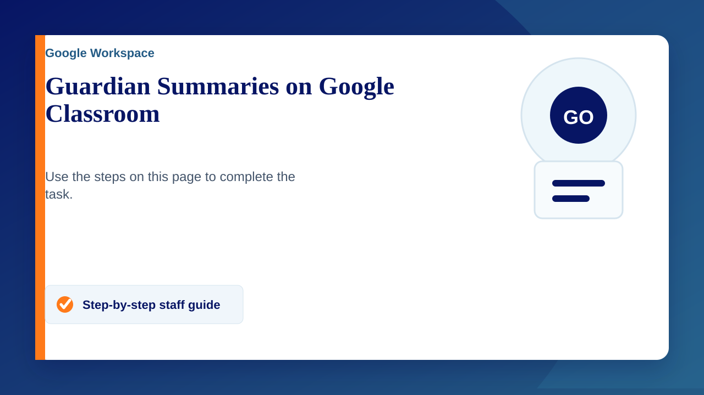
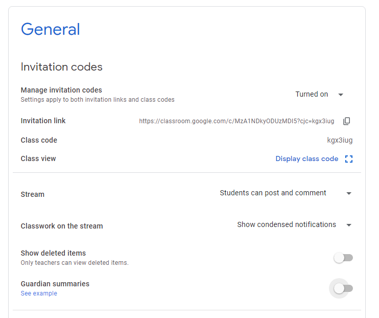

By default Guardian Summaries are off on Google Classroom. They are a really good feature for Guardians as they show Students missing work, upcoming work (due in the week as these are weekly emails) as well as the class activities set by the Teacher(s)
Turning Guardian Summaries on
- Go to classroom.Google.com
- Click on your Class
- Go to the settings cog in the top right
- Scroll down to 'Guardian Summaries' and toggle it on
- Tick or Untick 'Add all the classes that you teach to Guardian Summaries'
Video
